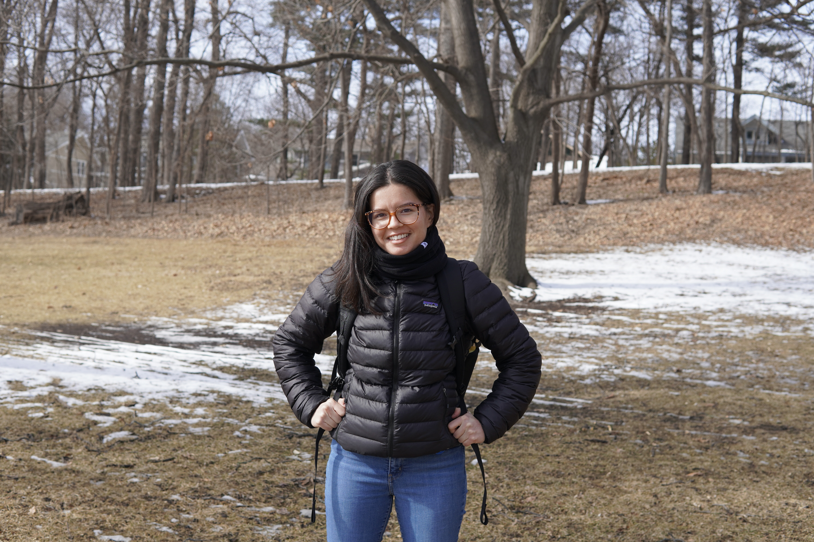

Amelia Stokolosa
Visiting Assistant Professor
School of Mathematics, Georgia Institute of Technology

Upcoming
- Dynamics in Geometric Dispersive Equations and the effects of Trapping, Scattering and weak Turbulence, III - Nov 29-Dec 4 2026 - Banff International Research Station (BIRS)
Organizing
- Special Session on New Developments in Discrete Harmonic Analysis and Applications to Other Fields at the AMS Southeastern sectional meeting - Oct 10-11 2026 - Kennesaw State University, Kennesaw, GA - Co-organizer
Invited Talks
- The 21st Prairie Analysis Seminar - Nov 7-8 2025 - Kansas State University, Manhattan, KS - Tame algebra estimates for product kernels and flag kernels on graded Lie groups
- Expanding Pathways in Harmonic Analysis - April 5-6 2025 - Washington University in St. Louis - Tame algebra estimates for product kernels and flag kernels on graded Lie groups
- Joint Mathematics Meetings 2025 - January 8-11 2025 - Seattle, WA - AMS Special Session on New Directions in Harmonic Analysis - Inverses and tame algebra estimates for product kernels and flag kernels on graded Lie groups
- AMS Fall Western sectional meeting - Oct 26-27 2024 - University of California, Riverside, Riverside, CA - Inverses and tame algebra estimates for product kernels and flag kernels on graded Lie groups
- Ohio River Analysis Meeting 2024 - Mar 16-17 2024 - University of Kentucky, Lexington, KY - Inverses of flag and product kernels on graded Lie groups
- AMS Fall Central sectional meeting - Oct 7-8 2023 - Creighton University, Omaha, NE - Inverses of flag and product kernels on graded Lie groups
Conferences and Poster Sessions
- Harmonic Analysis and Differential Equations - In Honor of Jill Pipher - June 23-29 2024 - Macquarie University, Sydney, Australia - Early Career Researcher poster session
- Madison Lectures in Harmonic Analysis (MLHA) - May 13-17 2024 - University of Wisconsin-Madison, Madison, WI - Poster session
- AMS Spring Central sectional meeting - April 20-21 2024 - University of Wisconsin-Milwaukee, Milwaukee, WI
- May Midwestern Microlocal Meeting - May 2023 - Northwestern University
- Harmonic Analysis and Fractal Sets (HAFS) 2023 - The Ohio State University
Workshops and Summer Schools
- Dynamics in Geometric Dispersive Equations and the effects of Trapping, Scattering and weak Turbulence, III - Nov 29-Dec 4 2024 - Hausdorff School for Advanced Studies in Mathematics, Bonn, Germany
- Hausdorff School: "Maximal Operators and Applications" - July 15-19 2024 - Hausdorff School for Advanced Studies in Mathematics, Bonn, Germany
- Study guide writing workshop 2023 - August 2023 - University of Pennsylvania
- Spring Opportunities Workshop at IAS 2023 - January 2023 - The Institute for Advanced Study